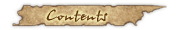
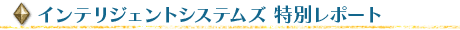

|
Ｗｉｉを購入した知人から最も聞かれる質問が「Ｗｉｉはインターネットにつなげたほうが楽しい？」というものです。皆さんゲームに夢中で、意外とネット環境を構築していなくて驚き。「お天気チャンネル」や「ニュースチャンネル」など便利な機能を利用できるし、最近では「みんなで投票チャンネル」というちょっと変わったお楽しみも増えて、こちらもオススメです。 今月号で紹介するのはロールプレイングシミュレーションの人気シリーズ最新作『ファイアーエムブレム 暁の女神』です。シリーズの代名詞である“手強いシミュレーション”という基本線はキープしつつ、初心者にも気軽に楽しめるようにこだわったある意味「贅沢」な仕上がりになっていると聞きます。 さらに今回は最新作のレポートに加えて、ファイアーエムブレムシリーズ全タイトルに携わり、2006年12月に20周年を加えたインテリジェントシステムズさんの特集も。これからファイアーエムブレムシリーズを始めようと興味を抱いている人も熱心なシリーズのファンも、必見ですよ！ |
|  | |
|  | |